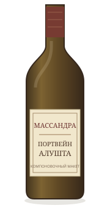

- Сахар
- сладкое
- Алкоголь
- 17%
- Регион
- Крым
Массандра2021
Портвейн белый Алушта
Открыть на сайте «Своё Вино»- Сахар
- сладкое
- Алкоголь
- 17%
- Категория
- Белое сладкое
- Сорт винограда
- Белые сорта винограда
- Регион
- Крым
- Винодельня
- Массандра
- Год
- Год не указан
- Цвет
- Золотистый, янтарный
О вкусе и сочетаниях
Аромат тёплый, с нотами сухофруктов, ванили и лёгкой пряности; вкус гармоничный, с ореховыми оттенками и приятной сладостью. Хорошо к фруктовым десертам, орехам, мягким сырам.